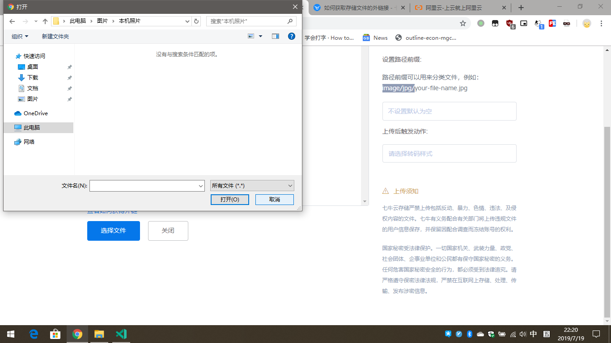

<!DOCTYPE html>
<html>
<head><meta name="generator" content="Hexo 3.9.0">
  <meta charset="utf-8">
  

  
  <title>LPD</title>
  <meta name="viewport" content="width=device-width, initial-scale=1, maximum-scale=1">
  <meta property="og:type" content="website">
<meta property="og:title" content="LPD">
<meta property="og:url" content="http://www.luopandeng.com/index.html">
<meta property="og:site_name" content="LPD">
<meta property="og:locale" content="zh-CN">
<meta name="twitter:card" content="summary">
<meta name="twitter:title" content="LPD">
  
    <link rel="alternate" href="/atom.xml" title="LPD" type="application/atom+xml">
  
  
    <link rel="icon" href="/favicon.png">
  
  
    <link href="//fonts.googleapis.com/css?family=Source+Code+Pro" rel="stylesheet" type="text/css">
  
  <link rel="stylesheet" href="/css/style.css">
</head>
</html>
<body>
  <div id="container">
    <div id="wrap">
      <header id="header">
  <div id="banner"></div>
  <div id="header-outer" class="outer">
    <div id="header-title" class="inner">
      <h1 id="logo-wrap">
        <a href="/" id="logo">LPD</a>
      </h1>
      
        <h2 id="subtitle-wrap">
          <a href="/" id="subtitle">自说自话</a>
        </h2>
      
    </div>
    <div id="header-inner" class="inner">
      <nav id="main-nav">
        <a id="main-nav-toggle" class="nav-icon"></a>
        
          <a class="main-nav-link" href="/">Home</a>
        
          <a class="main-nav-link" href="/archives">Archives</a>
        
      </nav>
      <nav id="sub-nav">
        
          <a id="nav-rss-link" class="nav-icon" href="/atom.xml" title="RSS Feed"></a>
        
        <a id="nav-search-btn" class="nav-icon" title="搜索"></a>
      </nav>
      <div id="search-form-wrap">
        <form action="//google.com/search" method="get" accept-charset="UTF-8" class="search-form"><input type="search" name="q" class="search-form-input" placeholder="Search"><button type="submit" class="search-form-submit">&#xF002;</button><input type="hidden" name="sitesearch" value="http://www.luopandeng.com"></form>
      </div>
    </div>
  </div>
</header>
      <div class="outer">
        <section id="main">
  
    <article id="post-最近在忙什么" class="article article-type-post" itemscope itemprop="blogPost">
  <div class="article-meta">
    <a href="/2019/08/27/最近在忙什么/" class="article-date">
  <time datetime="2019-08-27T00:48:03.000Z" itemprop="datePublished">2019-08-27</time>
</a>
    
  </div>
  <div class="article-inner">
    
    
      <header class="article-header">
        
  
    <h1 itemprop="name">
      <a class="article-title" href="/2019/08/27/最近在忙什么/">最近在忙什么</a>
    </h1>
  

      </header>
    
    <div class="article-entry" itemprop="articleBody">
      
        <p>​    最近在忙什么呢？其实最近也不算忙。上周回了趟老家，去看了岳父。我岳父，一个挺不容易的男人（这是我一目前对他的看法）。家有七个孩子，我老婆是他第五个孩子。支撑起这么一个家着实不容易，6月份的时候得了一个脑梗，现在活动还都不太方便。说话什么的也不是很清楚。以后的日子可能也恢复不来了。为了这七个孩子，付出了太多。不得已在我老婆小的时候把我老婆寄养在了岳母的妹妹家，也就是我老婆的姨母家里。自是吃了不少苦头。</p>
<p>​    我岳母现在右腿静脉曲张，另外也着实到了不应该干重活拼命挣钱的年龄。然而二老放不下家里的小儿子，最小的那个也是唯一的一个儿子。儿孙自有儿孙福，这是我一直以来的想法。家里老人也不应该为自己的子女做太多，毕竟现在社会的发展已经得到了很大改善，差能差到哪里去呢。想必是思想中的偏见逼迫着人们不断的负重前行吧。人们心中的偏见像一座大山。</p>
<p>​    从老家回来后就是在出租屋内收拾东西准备老婆研究生开学了。</p>
<p>​    开学当天，租了一台共享汽车去学校。路是真的堵，人是真的多。路上老婆一路叨叨我开车。我都不想说话，开个车遵守交通法规不就行了吗，一路叨。开车最累的地方是不是这里？嗯？</p>
<p>​    到学校里报到也是难，研究生报到处竟然要3点才有人，嗯，我们大概是12点左右到的。</p>
<p>​    写不下去了，一堆没有营养的东西。。。</p>
<p>​    </p>

      
    </div>
    <footer class="article-footer">
      <a data-url="http://www.luopandeng.com/2019/08/27/最近在忙什么/" data-id="cjzt549620001mokikc8o8du2" class="article-share-link">Share</a>
      
      
  <ul class="article-tag-list"><li class="article-tag-list-item"><a class="article-tag-list-link" href="/tags/日常/">日常</a></li></ul>

    </footer>
  </div>
  
</article>


  
    <article id="post-又一个大坑" class="article article-type-post" itemscope itemprop="blogPost">
  <div class="article-meta">
    <a href="/2019/08/27/又一个大坑/" class="article-date">
  <time datetime="2019-08-27T00:31:53.000Z" itemprop="datePublished">2019-08-27</time>
</a>
    
  </div>
  <div class="article-inner">
    
    
      <header class="article-header">
        
  
    <h1 itemprop="name">
      <a class="article-title" href="/2019/08/27/又一个大坑/">又一个大坑</a>
    </h1>
  

      </header>
    
    <div class="article-entry" itemprop="articleBody">
      
        <p>一不小心又进坑里了，这次的坑我是真的血亏。丢的文章不说还把环境弄坏了。目前只有两篇文章在列，也不想去恢复了。丢了就丢了吧。以后应该不会再去这么搞了。太麻烦了，以后长个心眼，多多备份吧。唯一的出路，哈哈哈。</p>

      
    </div>
    <footer class="article-footer">
      <a data-url="http://www.luopandeng.com/2019/08/27/又一个大坑/" data-id="cjzt5495q0000moki579j96ls" class="article-share-link">Share</a>
      
      
  <ul class="article-tag-list"><li class="article-tag-list-item"><a class="article-tag-list-link" href="/tags/坑/">坑</a></li></ul>

    </footer>
  </div>
  
</article>


  
    <article id="post-记录一下136版本的修改结果" class="article article-type-post" itemscope itemprop="blogPost">
  <div class="article-meta">
    <a href="/2019/07/28/记录一下136版本的修改结果/" class="article-date">
  <time datetime="2019-07-28T12:09:38.000Z" itemprop="datePublished">2019-07-28</time>
</a>
    
  </div>
  <div class="article-inner">
    
    
      <header class="article-header">
        
  
    <h1 itemprop="name">
      <a class="article-title" href="/2019/07/28/记录一下136版本的修改结果/">记录一下136版本的修改结果</a>
    </h1>
  

      </header>
    
    <div class="article-entry" itemprop="articleBody">
      
        <p>MiFi 设备送修收到到发现系统固件被更改了。变了 136 版本，之前是 83 。这样一来的话就不得不接受每天被限  17G 的蛋疼事实了。</p>
<p>但是，作为一个经常混迹于吾爱论坛的我来说，这是一件不能接受的，对，完全全无法接受。</p>
<p>从客服那里拿到系统刷机包后便。开始了一番折腾，由于懂的不多，导致我走了不少的弯路。折腾了几天都没成功，那几天心情实在是有点低落。FUCK！</p>
<h4 id="第一步-找到修改点"><a href="#第一步-找到修改点" class="headerlink" title="第一步 找到修改点"></a>第一步 找到修改点</h4><p>脑子已经不好使了，只记得上次修改了某个值，但是不记得具体的数字是多少了。只好去搜索安卓手机统计流量用的方法。得到的结果是 TrafficStats 这个类的下的 </p>
<p>getMobileRxBytes() 方法，按图索骥找到要修改的数 1048576 然后将其修改成比它的数。一切就是像上次那样进行。重新编译并打包后，满怀期待地把它刷入设备中。</p>
<p>开机。。。BOOM!!! 机器一直在重启。</p>
<h4 id="第二步-出问题不要慌，看日志"><a href="#第二步-出问题不要慌，看日志" class="headerlink" title="第二步 出问题不要慌，看日志"></a>第二步 出问题不要慌，看日志</h4><figure class="highlight powershell"><table><tr><td class="gutter"><pre><span class="line">1</span><br></pre></td><td class="code"><pre><span class="line">adb pull /sdcard .</span><br></pre></td></tr></table></figure>

<p>使用上面的命令把日志文件拉下来之后打开查看，发现</p>
<figure class="highlight java"><table><tr><td class="gutter"><pre><span class="line">1</span><br></pre></td><td class="code"><pre><span class="line">java.lang.UnsatisfiedLinkError dlopen failed: library XXX/libxxx.so not found</span><br></pre></td></tr></table></figure>

<p>于是又开始了一翻搜索，其中过程不表，反正在这一阶段失败了很多次。</p>
<p>在这个过程中，遭到了部门领导全部门最低绩效的评价。这个意思是劝退了吧。郑州工资本来就低的情况下，再降点可不就是劝退的意思 ？ （关于这个我想多说两句，其实从进公司起就觉得我这个岗位一个人完全可以处理的了。只是领导自己觉得一个人处理不来吧。所以自己私下里一直在学习。）</p>
<p>网上搜到的大多是有源码的情况下报这个错误怎么处理的。但是我这个完全是逆向出的东西，所以那个方法都不适用。最后还是找到了一个博客，博客里的那个才哥说他自己也是搜了很多地方都没有找到讨论这个问题的。他的方法就是检查以下几个文件、夹中是否有对应的 xxx.so 。</p>
<figure class="highlight shell"><table><tr><td class="gutter"><pre><span class="line">1</span><br><span class="line">2</span><br><span class="line">3</span><br><span class="line">4</span><br></pre></td><td class="code"><pre><span class="line">/system/etc/public.libraries.txt</span><br><span class="line">/system/vendor/public.libraries.txt</span><br><span class="line">/system/lib</span><br><span class="line">/system/vendor/lib</span><br></pre></td></tr></table></figure>

<p>我查了一下果然没有。于是就分别添加了进去。</p>
<h4 id="第三-成功啦"><a href="#第三-成功啦" class="headerlink" title="第三 成功啦"></a>第三 成功啦</h4><p>把导致错误的地方改正之后就开始了刷入修改后的系统包。没有任何异常。</p>
<h3 id="总结"><a href="#总结" class="headerlink" title="总结"></a>总结</h3><p>面对问题一定不能慌，可是暂时放弃。因为如果一直没有思路的话，不管你怎么做都只是在耗着，对自己没有任何帮助。该放弃时就放弃。另外，就是注意与人的交流，虽然期间也去了论坛，也是给了一些思路，但是事后证明，那些是错误的。最后，做项目一定要条理分明，不然过程真的很痛苦。另外，安卓逆向还是很有意思的嘛，除了过程比较蛋疼之外。</p>
<p></p>

      
    </div>
    <footer class="article-footer">
      <a data-url="http://www.luopandeng.com/2019/07/28/记录一下136版本的修改结果/" data-id="cjzt5496a0004moki4g2l44dt" class="article-share-link">Share</a>
      
      
    </footer>
  </div>
  
</article>


  
    <article id="post-恢复：一年前的踩坑记录" class="article article-type-post" itemscope itemprop="blogPost">
  <div class="article-meta">
    <a href="/2019/07/19/恢复：一年前的踩坑记录/" class="article-date">
  <time datetime="2019-07-19T14:46:01.000Z" itemprop="datePublished">2019-07-19</time>
</a>
    
  </div>
  <div class="article-inner">
    
    
      <header class="article-header">
        
  
    <h1 itemprop="name">
      <a class="article-title" href="/2019/07/19/恢复：一年前的踩坑记录/">恢复：一年前的踩坑记录</a>
    </h1>
  

      </header>
    
    <div class="article-entry" itemprop="articleBody">
      
        <p>最近几天在写一个小项目，在解析 XML 过程中遇到不少问题，这里写出来小结一下。<br>起初没把 XML 解析想的过于简单，结果在动手去做的时候遇到了不少的问题。代码报错、空指针、路径不对、没有得到正确的解析结果等等一些问题。<br>虽然通过谷歌最终都解决了问题，但是在解决问题的过程中也是遇到了不少的麻烦。整个业务的逻辑还没有理清楚。<br>下一步就得好好地把逻辑弄清楚。</p>
<p>暂时就写这么多吧。虽然没什么技术上的东西</p>

      
    </div>
    <footer class="article-footer">
      <a data-url="http://www.luopandeng.com/2019/07/19/恢复：一年前的踩坑记录/" data-id="cjzt549680003moki5swuf3cn" class="article-share-link">Share</a>
      
      
    </footer>
  </div>
  
</article>


  


</section>
        
          <aside id="sidebar">
  
    

  
    
  <div class="widget-wrap">
    <h3 class="widget-title">标签</h3>
    <div class="widget">
      <ul class="tag-list"><li class="tag-list-item"><a class="tag-list-link" href="/tags/坑/">坑</a></li><li class="tag-list-item"><a class="tag-list-link" href="/tags/日常/">日常</a></li></ul>
    </div>
  </div>


  
    
  <div class="widget-wrap">
    <h3 class="widget-title">标签云</h3>
    <div class="widget tagcloud">
      <a href="/tags/坑/" style="font-size: 10px;">坑</a> <a href="/tags/日常/" style="font-size: 10px;">日常</a>
    </div>
  </div>

  
    
  <div class="widget-wrap">
    <h3 class="widget-title">归档</h3>
    <div class="widget">
      <ul class="archive-list"><li class="archive-list-item"><a class="archive-list-link" href="/archives/2019/08/">八月 2019</a></li><li class="archive-list-item"><a class="archive-list-link" href="/archives/2019/07/">七月 2019</a></li></ul>
    </div>
  </div>


  
    
  <div class="widget-wrap">
    <h3 class="widget-title">最新文章</h3>
    <div class="widget">
      <ul>
        
          <li>
            <a href="/2019/08/27/最近在忙什么/">最近在忙什么</a>
          </li>
        
          <li>
            <a href="/2019/08/27/又一个大坑/">又一个大坑</a>
          </li>
        
          <li>
            <a href="/2019/07/28/记录一下136版本的修改结果/">记录一下136版本的修改结果</a>
          </li>
        
          <li>
            <a href="/2019/07/19/恢复：一年前的踩坑记录/">恢复：一年前的踩坑记录</a>
          </li>
        
      </ul>
    </div>
  </div>

  
</aside>
        
      </div>
      <footer id="footer">
  
  <div class="outer">
    <div id="footer-info" class="inner">
      &copy; 2019 LPD<br>
      Powered by <a href="http://hexo.io/" target="_blank">Hexo</a>
    </div>
  </div>
</footer>
    </div>
    <nav id="mobile-nav">
  
    <a href="/" class="mobile-nav-link">Home</a>
  
    <a href="/archives" class="mobile-nav-link">Archives</a>
  
</nav>
    

<script src="//ajax.googleapis.com/ajax/libs/jquery/2.0.3/jquery.min.js"></script>


  <link rel="stylesheet" href="/fancybox/jquery.fancybox.css">
  <script src="/fancybox/jquery.fancybox.pack.js"></script>


<script src="/js/script.js"></script>


  </div>
</body>
</html>